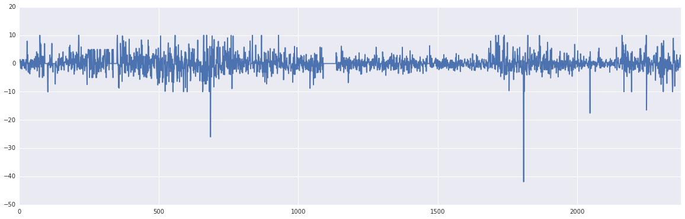
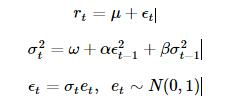
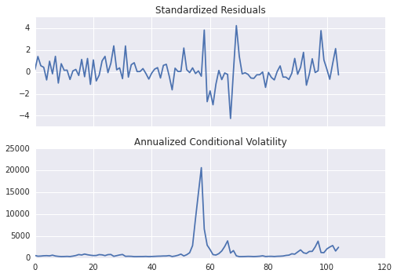
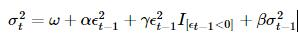
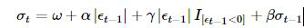
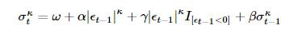
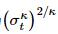
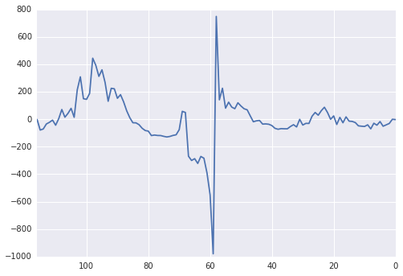
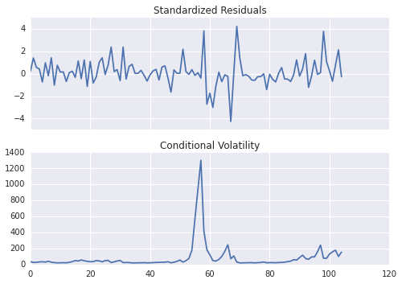

10.3 Arch/Garch 模型 · 如何使用优矿进行 GARCH 模型分析
ARCH 建模示例
小弟近来学习波动率建模相关知识，正巧发现优矿中有ARCH包，所以通过翻译ARCH包文档中的示例，来学习相关函数用法。
翻译有不少不准确的地方，请大家指出，我会及时改进。
import numpy as np
import matplotlib.mlab as mlab
import matplotlib.pyplot as plt
try:
import seaborn
except ImportError:
pass
一、准备工作
这个例子中使用通联DataAPI提供的行情数据。以平安银行为例。
下面画出了平安银行从1990年到2015年收益率情况。
import datetime as dt
st = dt.datetime(1990,1,1)
en = dt.datetime(2015,6,30)
data = DataAPI.MktEqudGet(secID=u"",ticker=u"000001",tradeDate=u"",beginDate=u"",endDate=u"",field=u"ticker,secShortName,tradeDate,closePrice,PE",pandas="1")
# data.index = data.tradeDate
returns = 100 * data['closePrice'].pct_change().dropna()
figure = returns.plot(figsize=(20,6))

二、实现常见模型
描述一个模型最简单的方法就是使用Python的类库arch.arch_model。使用这个类库可以实现大多数常见的模型。
简单的调用arch类库会得到一个均值恒定，误差符合正态分布，符合GARCH(1,1)波动率过程的模型。

通过调用fit方法，可以对这个模型进行估计。可选输入项 update_freq控制优化器输出结果的频率，disp控制是否返回收敛相关信息。返回结果直接提供了估计的参数值和相关数量，同时包含估计结果的摘要信息。
GARCH (均值恒定)
使用默认选项，可以生成一个均值恒定，误差符合正态分布，同时符合GARCH(1,1)条件方差的模型。
通过拟合获得模型的参数，下面展示拟合结果的摘要。
from arch import arch_model
am = arch_model(returns)
res = am.fit(update_freq=5)
print(res.summary())
Iteration: 5, Func. Count: 38, Neg. LLF: 5787.7752693
Iteration: 10, Func. Count: 75, Neg. LLF: 5785.39088499
Optimization terminated successfully. (Exit mode 0)
Current function value: 5785.0196556
Iterations: 14
Function evaluations: 101
Gradient evaluations: 14
Constant Mean - GARCH Model Results
==============================================================================
Dep. Variable: closePrice R-squared: -0.000
Mean Model: Constant Mean Adj. R-squared: -0.000
Vol Model: GARCH Log-Likelihood: -5785.02
Distribution: Normal AIC: 11578.0
Method: Maximum Likelihood BIC: 11601.1
No. Observations: 2373
Date: Fri, Oct 16 2015 Df Residuals: 2369
Time: 11:08:36 Df Model: 4
Mean Model
==============================================================================
coef std err t P>|t| 95.0% Conf. Int.
------------------------------------------------------------------------------
mu 0.0349 2.825e-03 12.348 4.985e-35 [2.935e-02,4.042e-02]
Volatility Model
==============================================================================
coef std err t P>|t| 95.0% Conf. Int.
------------------------------------------------------------------------------
omega 0.0383 2.763e-03 13.861 1.085e-43 [3.288e-02,4.371e-02]
alpha[1] 0.0287 2.439e-04 117.761 0.000 [2.825e-02,2.920e-02]
beta[1] 0.9694 4.516e-04 2146.801 0.000 [ 0.969, 0.970]
==============================================================================
Covariance estimator: robust
plot() 函数可以快速展示 标的的标准偏差和条件波动率。
fig = res.plot(annualize='D')

GJR-GARCH
arch_model 在构建模型时，还可以添加附加参数。在这个例子中，设置o为1， 即包含了非对称冲击的一阶滞后项，从而将原GARCH模型转换为一个GJR-GARCH模型。新的模型具有动态方差，由下面公式给出：

其中，I是一个指标函数，当它的输入参数为真时，返回为1.
对数似然函数值改进了非对称项引入的平稳性问题，从而使参数估计具有很高的显著性。
am = arch_model(returns, p=1, o=1, q=1)
res = am.fit(update_freq=5, disp='off')
print(res.summary())
TARCH/ZARCH
TARCH模型 (又称为 ZARCH模型) 是对波动率的绝对值进行建模. 使用该模型时，需要在arch_model建构函数中，设置power=1.0。因为默认的阶数为2，对应的是用平方项表示的方差变化过程。
TARCH model的波动率过程由下面公式给出：

更一般的情况，模型的动态波动率代码κ阶。这种情况由下面的公式给出

其中，条件方差为
尽管对数似然函数值变动范围更小，TARCH 模型还是对拟合过程做了改进。
am = arch_model(returns, p=1, o=1, q=1, power=1.0)
res = am.fit(update_freq=5)
print(res.summary())
Iteration: 5, Func. Count: 45, Neg. LLF: 5765.36462439
Iteration: 10, Func. Count: 84, Neg. LLF: 5758.70411096
Iteration: 15, Func. Count: 121, Neg. LLF: 5758.63601597
Optimization terminated successfully. (Exit mode 0)
Current function value: 5758.6360268
Iterations: 15
Function evaluations: 121
Gradient evaluations: 15
Constant Mean - TARCH/ZARCH Model Results
==============================================================================
Dep. Variable: closePrice R-squared: -0.000
Mean Model: Constant Mean Adj. R-squared: -0.000
Vol Model: TARCH/ZARCH Log-Likelihood: -5758.64
Distribution: Normal AIC: 11527.3
Method: Maximum Likelihood BIC: 11556.1
No. Observations: 2373
Date: Fri, Oct 16 2015 Df Residuals: 2368
Time: 12:50:24 Df Model: 5
Mean Model
==============================================================================
coef std err t P>|t| 95.0% Conf. Int.
------------------------------------------------------------------------------
mu 0.0625 4.323e-03 14.456 2.296e-47 [5.402e-02,7.096e-02]
Volatility Model
==============================================================================
coef std err t P>|t| 95.0% Conf. Int.
------------------------------------------------------------------------------
omega 0.0457 4.933e-03 9.257 2.107e-20 [3.599e-02,5.533e-02]
alpha[1] 0.0594 1.012e-03 58.701 0.000 [5.742e-02,6.139e-02]
gamma[1] -0.0184 5.771e-04 -31.882 4.768e-223 [-1.953e-02,-1.727e-02]
beta[1] 0.9498 2.510e-03 378.466 0.000 [ 0.945, 0.955]
==============================================================================
Covariance estimator: robust
学生T分布误差
金融资产回报率的分布往往体现出肥尾现象，学生T分布是一种简单的方法，可以用来捕捉这种特性。在调用arch_model 构建函数时，可以将概率分布从正态分布转换为学生T分布。
标准化的新息展示出，分布函数具有一个将近10个估计自由度的肥尾。 对数似然函数值同样有大的改善。
am = arch_model(returns, p=1, o=1, q=1, power=1.0, dist='StudentsT')
res = am.fit(update_freq=5)
print(res.summary())
Iteration: 5, Func. Count: 48, Neg. LLF: 5522.16193119
Iteration: 10, Func. Count: 93, Neg. LLF: 5475.09377571
Iteration: 15, Func. Count: 138, Neg. LLF: 5451.04968458
Iteration: 20, Func. Count: 179, Neg. LLF: 5435.39156625
Iteration: 25, Func. Count: 223, Neg. LLF: 5434.83467797
Iteration: 30, Func. Count: 269, Neg. LLF: 5434.83086355
Optimization terminated successfully. (Exit mode 0)
Current function value: 5434.83085822
Iterations: 33
Function evaluations: 304
Gradient evaluations: 33
Constant Mean - TARCH/ZARCH Model Results
====================================================================================
Dep. Variable: closePrice R-squared: -0.001
Mean Model: Constant Mean Adj. R-squared: -0.001
Vol Model: TARCH/ZARCH Log-Likelihood: -5434.83
Distribution: Standardized Student's t AIC: 10881.7
Method: Maximum Likelihood BIC: 10916.3
No. Observations: 2373
Date: Fri, Oct 16 2015 Df Residuals: 2367
Time: 13:04:54 Df Model: 6
Mean Model
===============================================================================
coef std err t P>|t| 95.0% Conf. Int.
-------------------------------------------------------------------------------
mu -1.3518e-08 1.493e-10 -90.539 0.000 [-1.381e-08,-1.323e-08]
Volatility Model
===============================================================================
coef std err t P>|t| 95.0% Conf. Int.
-------------------------------------------------------------------------------
omega 0.0894 0.304 0.294 0.769 [ -0.507, 0.686]
alpha[1] 0.1185 9.143e-03 12.962 2.004e-38 [ 0.101, 0.136]
gamma[1] -2.9293e-03 4.117e-03 -0.712 0.477 [-1.100e-02,5.139e-03]
beta[1] 0.8829 9.652e-02 9.148 5.803e-20 [ 0.694, 1.072]
Distribution
==============================================================================
coef std err t P>|t| 95.0% Conf. Int.
------------------------------------------------------------------------------
nu 3.6773 0.142 25.919 4.047e-148 [ 3.399, 3.955]
==============================================================================
Covariance estimator: robust
使用固定参数
在一些场景下，相比估计出来的参数，使用固定参数可能更让人感兴趣。
使用arch_model的fix()可以同样生成一个模型。除了没有与推断相关的值(标准差，t统计量等)的差别之外，新的模型和通常的模型没有什么差别。
在这个例子中，将参数固定设置为之前估计模型的对称版本。
fixed_res = am.fix([0.0235, 0.01, 0.06, 0.0, 0.9382, 8.0])
print(fixed_res.summary())
Constant Mean - TARCH/ZARCH Model Results
=====================================================================================
Dep. Variable: closePrice R-squared: --
Mean Model: Constant Mean Adj. R-squared: --
Vol Model: TARCH/ZARCH Log-Likelihood: -5579.95
Distribution: Standardized Student's t AIC: 11171.9
Method: User-specified Parameters BIC: 11206.5
No. Observations: 2373
Date: Fri, Oct 16 2015
Time: 13:04:57
Mean Model
=====================
coef
---------------------
mu 0.0235
Volatility Model
=====================
coef
---------------------
omega 0.0100
alpha[1] 0.0600
gamma[1] 0.0000
beta[1] 0.9382
Distribution
=====================
coef
---------------------
nu 8.0000
=====================
Results generated with user-specified parameters.
Since the model was not estimated, there are no std. errors.
import pandas as pd
df = pd.concat([res.conditional_volatility,fixed_res.conditional_volatility],1)
df.columns = ['Estimated', 'Fixed']
df.plot()
<matplotlib.axes.AxesSubplot at 0x6b5cd90>

三、通过多个组件模块创建模型
模型同样可以使用代表三类模型的arch模块进行系统性的构建。
- A mean model (arch.mean)
- Zero mean (ZeroMean) - useful if using residuals from a model estimated separately
- Constant mean (ConstantMean) - common for most liquid financial assets
- Autoregressive (ARX) with optional exogenous regressors
- Heterogeneous (HARX) autoregression with optional exogenous regressors
- Exogenous regressors only (LS)
- A volatility process (arch.volatility)
- ARCH (ARCH)
- GARCH (GARCH)
- GJR-GARCH (GARCH using o argument)
- TARCH/ZARCH (GARCH using power argument set to 1)
- Power GARCH and Asymmetric Power GARCH (GARCH using power)
- Heterogeneous ARCH (HARCH)
- Parameterless Models
- Exponentially Weighted Moving Average Variance, known as RiskMetrics (EWMAVariance)
- Weighted averages of EWMAs, known as the RiskMetrics 2006 methodology (RiskMetrics2006)
- A distribution (arch.distribution)
- Normal (Normal)
- Standardized Students's T (StudentsT)
Mean Models 均值模型
第一种选择是使用均值模型。 对于很多流动性充足的金融资产来说， 恒定均值(甚至是0均值)的模型就足够了。
对于其他一些时间序列，若通货膨胀率数据，可能需要更加复杂的模型。 下面的例子使用了中国居民消费价格指数(CPI)数据。这些数据由通联DataAPI提供。
core_cpi = DataAPI.ChinaDataCPIGet(indicID=u"M030000003",indicName=u"",beginDate=u"20050101",endDate=u"",field=u"",pandas="1")
ann_inflation = 100 * core_cpi.sort(columns='periodDate').dataValue.pct_change(12).dropna()
fig = ann_inflation.plot()
fig
<matplotlib.axes.AxesSubplot at 0x6e6a090>

所有的均值模型都派生自恒定方差、正态分布误差的基础模型。
对于ARX模型，lags输入参数制定了模型需要包括的滞后项阶数。
from arch.univariate import ARX
ar = ARX(ann_inflation, lags = [1, 3, 12])
print(ar.fit().summary())
AR - Constant Variance Model Results
==============================================================================
Dep. Variable: dataValue R-squared: 0.264
Mean Model: AR Adj. R-squared: 0.242
Vol Model: Constant Variance Log-Likelihood: -685.867
Distribution: Normal AIC: 1381.73
Method: Maximum Likelihood BIC: 1395.00
No. Observations: 105
Date: Fri, Oct 16 2015 Df Residuals: 100
Time: 13:21:29 Df Model: 5
Mean Model
=================================================================================
coef std err t P>|t| 95.0% Conf. Int.
---------------------------------------------------------------------------------
Const -1.4076 254.081 -5.540e-03 0.996 [-4.994e+02,4.966e+02]
dataValue[1] 0.4233 0.112 3.777 1.590e-04 [ 0.204, 0.643]
dataValue[3] 0.1590 1.423e-02 11.173 5.523e-29 [ 0.131, 0.187]
dataValue[12] -0.0117 1.050e-03 -11.133 8.695e-29 [-1.374e-02,-9.628e-03]
Volatility Model
==============================================================================
coef std err t P>|t| 95.0% Conf. Int.
------------------------------------------------------------------------------
sigma2 2.7619e+04 2.259e+08 1.223e-04 1.000 [-4.427e+08,4.427e+08]
==============================================================================
Covariance estimator: White's Heteroskedasticity Consistent Estimator
Volatility Processes 波动率过程
波动率过程可以通过在均值模型中添加volatility属性来实现。
下面的例子中将模型的波动率设置为ARCH(5)，update_freq和disp用来约束fit()进行估计时候的输出内容。
from arch.univariate import ARCH, GARCH
ar.volatility = ARCH(p=5)
res = ar.fit(update_freq=0, disp='off')
print(res.summary())
AR - ARCH Model Results
==============================================================================
Dep. Variable: dataValue R-squared: 0.104
Mean Model: AR Adj. R-squared: 0.077
Vol Model: ARCH Log-Likelihood: -576.003
Distribution: Normal AIC: 1172.01
Method: Maximum Likelihood BIC: 1198.55
No. Observations: 105
Date: Fri, Oct 16 2015 Df Residuals: 95
Time: 13:25:52 Df Model: 10
Mean Model
=================================================================================
coef std err t P>|t| 95.0% Conf. Int.
---------------------------------------------------------------------------------
Const -11.9096 29.775 -0.400 0.689 [-70.268, 46.449]
dataValue[1] 0.8647 2.093e-02 41.313 0.000 [ 0.824, 0.906]
dataValue[3] -0.0296 9.925e-03 -2.978 2.904e-03 [-4.901e-02,-1.010e-02]
dataValue[12] -0.0154 2.936e-04 -52.419 0.000 [-1.597e-02,-1.482e-02]
Volatility Model
===============================================================================
coef std err t P>|t| 95.0% Conf. Int.
-------------------------------------------------------------------------------
omega 404.9890 1.164e+05 3.480e-03 0.997 [-2.277e+05,2.285e+05]
alpha[1] 0.6348 5.176e-02 12.266 1.383e-34 [ 0.533, 0.736]
alpha[2] 0.2690 1.767e-02 15.221 2.552e-52 [ 0.234, 0.304]
alpha[3] 0.0962 1.161e-02 8.283 1.196e-16 [7.341e-02, 0.119]
alpha[4] 2.5205e-10 3.554e-04 7.093e-07 1.000 [-6.965e-04,6.965e-04]
alpha[5] -4.6303e-10 1.178e-05 -3.929e-05 1.000 [-2.310e-05,2.309e-05]
===============================================================================
Covariance estimator: robust
下面的图标，展示了标准化后的新息和条件波动率的情况。可以看出，虽然进行了标准化处理，一些位置还是出现了较大的误差(通过振幅来看)
fig = res.plot()

Distributions 概率分布情况
最后提一下，模型的概率分布可以通过设置distribution属性来修改，将默认的正态分布修改为学生T分布。
学生T分布改进了模型，模型的估计自由度大约在8左右。
备注 1 本文章是将Python ARCH类库的帮助文档进行翻译产生的。
本文将原文中的数据源替换为优矿/通联DataAPI的数据，方便优矿用户进行参照和分析。
2 文中，多次提到iter，但这个疑为原作者笔误，故都改为update_freq
3 原文最后一章‘WTI Crude’由于给出的例子和当前的arch包版本不兼容，无法正确运行，故没有引入